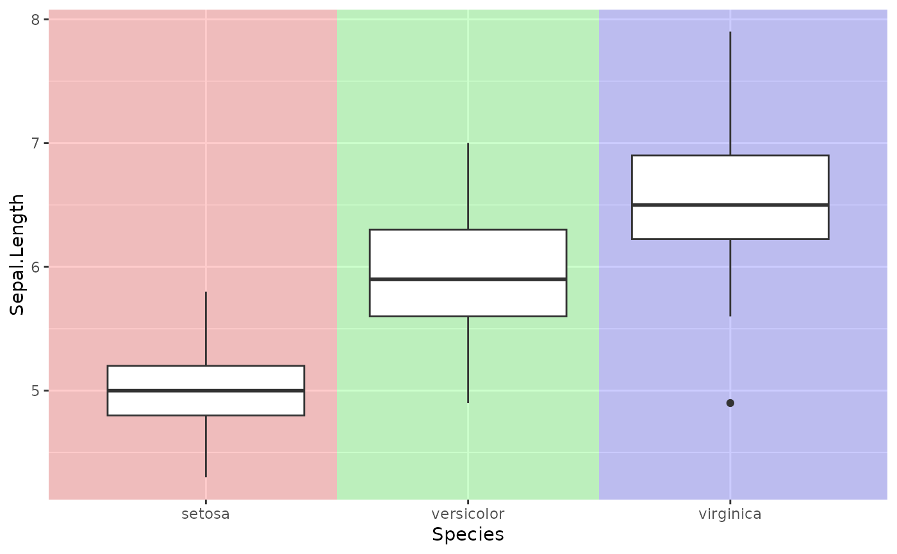

Inserts shaded rectangles behind the data layer, one per level of the categorical axis variable.
Usage
fmt_bg(
plot,
palette = NULL,
palcolor = NULL,
alpha = 0.3,
bg_axis = c("x", "y")
)Arguments
- plot
A ggplot, patchwork, or list of ggplots.
- palette
Palette name passed to
plotthis::palette_this.- palcolor
Manual colour vector (overrides palette).
- alpha
Transparency of the background rectangles.
- bg_axis
Which axis holds the categorical variable:
"x"or"y".
See also
Other plot formatting:
fmt_axis(),
fmt_boxplot(),
fmt_com(),
fmt_expand(),
fmt_his(),
fmt_legend(),
fmt_plot(),
fmt_point(),
fmt_ref(),
fmt_scale(),
fmt_strip(),
fmt_tag()
Examples
library(ggplot2)
p <- ggplot(iris, aes(Species, Sepal.Length)) + geom_boxplot()
fmt_bg(p, alpha = 0.2)
